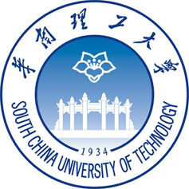

戴愿 (Yuan Dai)
 |
Ph.D. Candidate |
About me
I am now a third-year PhD student at the School of Civil Engineering and Transportation, South China University of Technology.
Before that, I obtained a master's degree and a bachelor's degree from the School of Computer and Communication Engineering, Changsha University of Science and Technology in December 2018 and July 2016, respectively.
Research Interests: Intelligent Transportation, Computer Vision, Object Detection, Light-weight Neural Networks, Deep Learning.
Educations
|  | Ph.D. South China University of Technology (2019.9 ~ 2023.7)
|
B. Sc and M. S. Changsha University of Science and Technology (2012.9 ~ 2018.12)
|
Selected publications
Making YOLO Faster: Towards Real-Time Intelligent Transportation Detection
Yuan Dai, Weiming Liu, Wei Xie, Ruikang Liu, Zhongxing Zheng, Kejun Long, Liang Wang, Liang Mao, Qisheng Qiu, Guangzheng Ling
IEEE Intelligent Transportation Systems Magazine (IEEE-ITSM), 2022. Early Access, [JCR Q1]
Larger is Better? Rethinking the Application of Deep Learning for Foreign Object Detection in Metro System
Yuan Dai, Weiming Liu, Ruikang Liu, Zhongxing Zheng, Kejun Long, Liang Wang, Liang Mao, Qisheng Qiu, Guangzheng Ling
Computational Intelligence and Neuroscience (Comput. Intell. Neurosci.), 2022. Under Review, [JCR Q2]
Efficient Foreign Object Detection Between PSDs and Metro Doors via Deep Neural Networks
Yuan Dai, Weiming Liu, Haiyu Li, Lan Liu
IEEE Access, 2020. [JCR Q2][PDF]
Aspect based sentiment analysis by a linguistically regularized CNN with gated mechanism
Daojian Zeng, Yuan Dai, Feng Li, Jin Wang, Arun Kumar Sangaiah
JOURNAL OF INTELLIGENT & FUZZY SYSTEMS (JIFS), 2019.
Adversarial learning for distant supervised relation extraction
Daojian Zeng, Yuan Dai, Feng Li, R Simon Sherratt, Jin Wang
Computers, Materials & Continua (CMC), 2018. [JCR Q2][PDF]
Awards
2018：National Scholarship for Graduate Students
2017：Best Paper Award, CCL & NLP-NABD 2017 (awarded to 3 out of 264 submissions)
2017：Outstanding Postgraduate Student, Changsha University of Science & Technology
Academic service
IEEE Graduate Student Member, CCF Student Member, CSIG Student Member, CHTS Student Member
Reviewer：IEEE T-ITS, IEEE Access, Transportation Research Record；ACL, AAAI, TRB, ICAIS